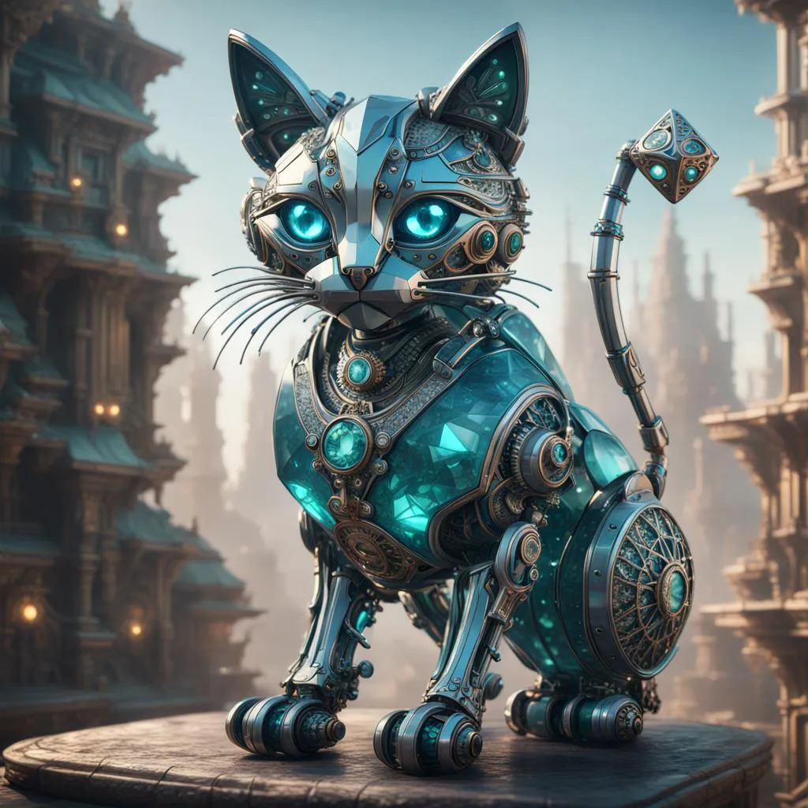

AI generated...?

You: I wish to acquire the treasure of Catalysts.
Catastrophia: Executing treasure acquisition protocol. Scanning for loot. Proceeding cautiously.
Catwizard69: It's that easy...? (It is.)
Catastrophia: Enter password.
4th wall break hint: it is my name.